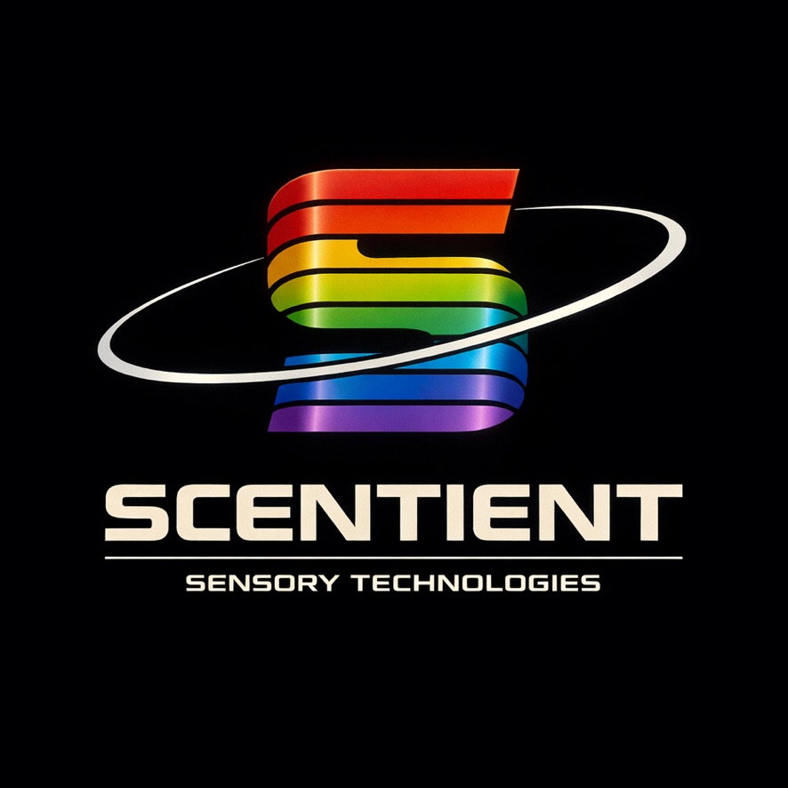

Understand
human experience.
A sensation is shared. Its meaning is personal. We study the part that belongs to the person.
HUMAN EXPERIENCE. MACHINE INTELLIGENCE.
We study how experience becomes personal meaning.
And build intelligence that can learn from it.

A sensation is shared. Its meaning is personal. We study the part that belongs to the person.
Intelligence should learn from encounters and consequences, as well as descriptions.
A useful system makes room for uncertainty, correction and a person’s right to say no.
02 / A PLACE TO BEGIN
Sometimes a scent takes you somewhere before you find the words.
We begin with scent and memory. Demeter Fragrance Library gives our work a first commercial setting, grounded in fragrance and everyday experience.
Our research reaches toward agents and embodied intelligence.
Olfactory memory. Associative learning. Human-centered computing.
We draw questions from neuroscience and the history of computing, then ask what stands up in experience.
“A meaningful memory need not be a preference.”Scentient · From Sensation to SignificanceRead the founding essay ↗
A CONVERSATION STARTS SOMEWHERE.